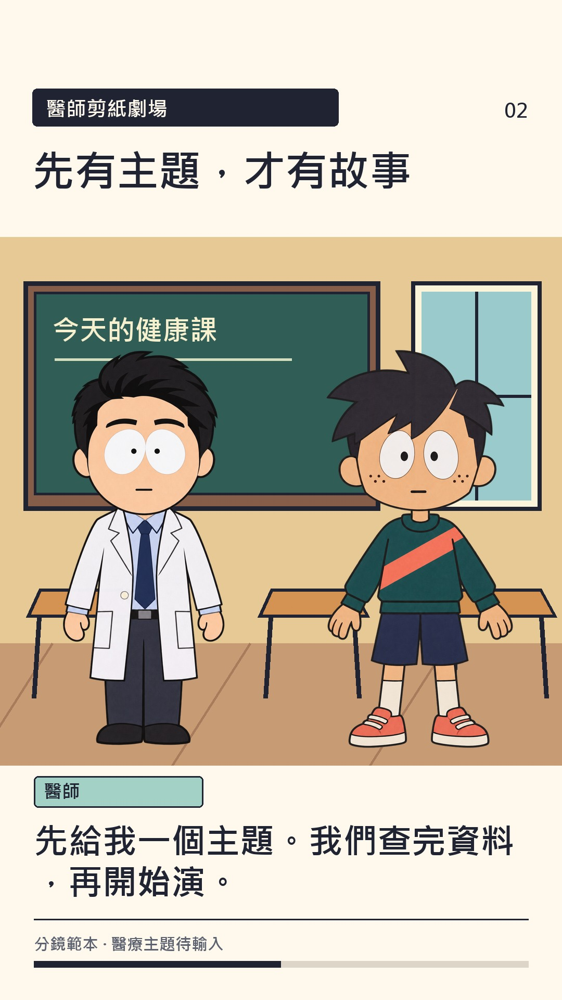
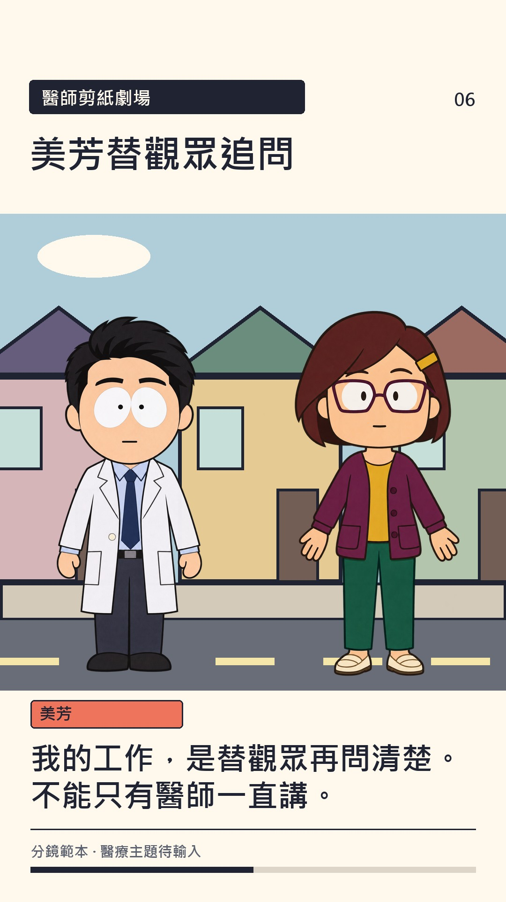
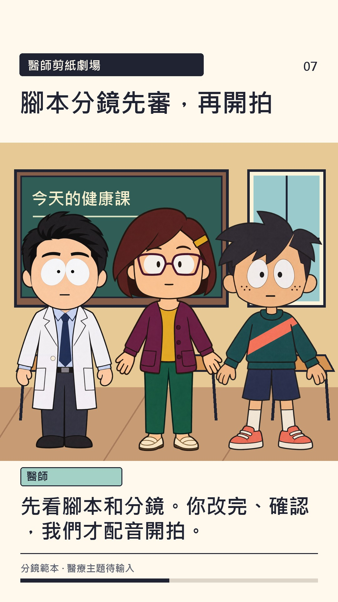
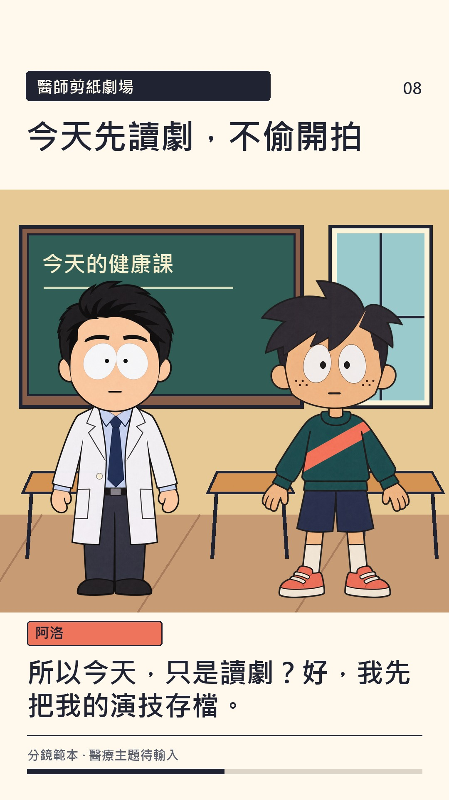

01 · 教室 · 5.7s（估）
先猜，再找答案？
阿洛：醫師！今天的健康課講什麼？我已經準備亂猜了！
動作：教室黑板前，阿洛點頭搶話，醫師在旁聽。
反應：醫師維持冷面，等阿洛說完。
鏡頭：固定尺度・阿洛發言 · 來源：無臨床說法
待審稿 · 版本 03dce0acb85c7a69 · 約 47.2 秒（估）
尚未生成配音、配樂或影片。請先修改或確認腳本與分鏡。
阿洛：醫師！今天的健康課講什麼？我已經準備亂猜了！
動作：教室黑板前，阿洛點頭搶話，醫師在旁聽。
反應：醫師維持冷面，等阿洛說完。
鏡頭：固定尺度・阿洛發言 · 來源：無臨床說法

醫師：先給我一個主題。我們查完資料，再開始演。
動作：醫師平靜回應，維持固定尺度雙人構圖。
反應：阿洛停止搶話，留一個短停頓。
鏡頭：固定尺度・醫師發言 · 來源：無臨床說法

美芳：那骨科、復健科，每一集都用同一個答案，行不行？
動作：校門前，美芳接話；醫師留在同框。
反應：問題升級，等待醫師回答。
鏡頭：固定尺度・美芳發言 · 來源：無臨床說法

醫師：場景可以一樣，資料、情境和笑點，每次都要重寫。
動作：醫師輕微搖頭，人物尺度保持不變。
反應：美芳同尺度站在醫師旁邊，聽完再接話。
鏡頭：固定尺度・醫師發言 · 來源：無臨床說法

阿洛：懂了！我的工作，就是先把大家的問題問歪一點！
動作：街道對切阿洛，他很有自信地點頭。
反應：醫師冷面旁聽，不幫錯誤推論背書。
鏡頭：固定尺度・阿洛發言 · 來源：無臨床說法

美芳：我的工作，是替觀眾再問清楚。不能只有醫師一直講。
動作：同一街區切到美芳，呈現角色互相接話。
反應：醫師等待她說完，保留對話感。
鏡頭：固定尺度・美芳發言 · 來源：無臨床說法

醫師：先看腳本和分鏡。你改完、確認，我們才配音開拍。
動作：回到教室，三人同框，醫師交代製作順序。
反應：阿洛與美芳暫停接話，留閱讀時間。
鏡頭：固定尺度・全員同框 · 來源：無臨床說法

阿洛：所以今天，只是讀劇？好，我先把我的演技存檔。
動作：同尺度雙人構圖，阿洛說完後維持靜止冷場。
反應：醫師在旁冷面旁聽，畫面停住，等待使用者修改分鏡。
鏡頭：固定尺度・笑點留白 · 來源：無臨床說法